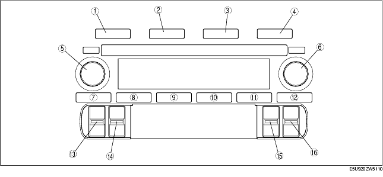

Troubleshooting ➭ BODY & ACCESSORIES ➭ DIAGNOSTIC ASSIST FUNCTION
DIAGNOSTIC ASSIST FUNCTION
id0902d8361100
{: #wp1059776}
Structural View
Buttons

|
Type A {: #wp1059859} |
Type B {: #wp1059861} |
|
|---|---|---|
|
1 {: #wp1059825} |
FM 1/2 button {: #wp1059827} |
|
|
2 {: #wp1059880} |
AM button {: #wp1059883} |
|
|
3 {: #wp1059890} |
CD button {: #wp1059893} |
|
|
4 {: #wp1059900} |
MEDIA button {: #wp1059903} |
|
|
5 {: #wp1059967} |
POWER/VOLUME button {: #wp1059970} |
AUDIO CONT/TUNE/TEXT button {: #wp1059973} |
|
6 {: #wp1059998} |
AUDIO CONT/TUNE/TEXT button {: #wp1060001} |
POWER/VOLUME button {: #wp1060004} |
|
7 {: #wp1060029} |
Preset button 1 {: #wp1060032} |
|
|
8 {: #wp1060049} |
Preset button 2 {: #wp1060052} |
|
|
9 {: #wp1060069} |
Preset button 3 {: #wp1060072} |
|
|
10 {: #wp1060089} |
Preset button 4 {: #wp1060092} |
|
|
11 {: #wp1060109} |
Preset button 5 {: #wp1060112} |
|
|
12 {: #wp1060129} |
Preset button 6 {: #wp1060132} |
|
|
13 {: #wp1060149} |
SEEK switch {: #wp1060152} |
Fast-forward/Reverse switch {: #wp1060155} |
|
14 {: #wp1060177} |
CLOCK switch {: #wp1060180} |
|
|
15 {: #wp1060197} |
TA/AUTO-M switch {: #wp1060200} |
SCAN/AUTO-M switch {: #wp1060203} |
|
16 {: #wp1060228} |
AF/PTY switch {: #wp1060231} |
SEEK switch {: #wp1060234} |
Information Display Inspection
-
With the audio power on, press the POWER button and simultaneously pull up the SEEK switch for approx. 1s.
-
Inspect according to the following table:
|
DISPLAY {: #wp1060407} |
ACTION {: #wp1060409} |
||
|---|---|---|---|
|
Start the information display inspection mode. {: #wp1060299} |
{: #wp1060301} |
The characters displayed on the information display are not truncated or faint. {: #wp1060357} |
The information display is normal. {: #wp1060360} |
|
Except above {: #wp1060440} |
Replace the base unit. (See AUDIO UNIT DISASSEMBLY/ASSEMBLY.) {: #wp1060443} |
||
- Turn the audio off or the ignition switch to the LOCK position to stop the diagnostic assist function.
Speaker Inspection
-
With the audio power on, press the POWER button and simultaneously press down the SCAN/AUTO-M switch for approx. 1s.
-
Inspect according to the following table:
|
DISPLAY {: #wp1060720} |
ACTION {: #wp1060722} |
||
|---|---|---|---|
|
• Start the speaker inspection mode. {: #wp1060612} With Bose } • Do all the speakers output sound? {: #wp1060839Without Bose} • Does each speaker output sound in the following order? {: #wp1060859} 1. Front door speaker and tweeter (LH) {: #wp1060869}2. Front door speaker and tweeter (RH) {: #wp1060883}3. Rear speaker (LH)*1 {: #wp1060893}4. Rear speaker (RH)*1 {: #wp1060910 |
|
Yes {: #wp1060670} |
Speakers, and wiring harness between the base unit and speakers are normal. {: #wp1060673} |
|
No {: #wp1060753} |
• Inspect the following parts. {: #wp1060756} - Malfunctioning speaker {: #wp1060962}- Wiring harness between base unit and malfunctioning speaker {: #wp1060976} |
||
- Turn the audio off or the ignition switch to the LOCK position to stop the diagnostic assist function.
*1 : {: #wp1061004} May or may not be equipped, depending on the vehicle.
Radio Reception Condition Inspection
-
With the audio power on and at radio mode, press the POWER button and simultaneously press the Preset 2 button for approx. 1 s.
-
Inspect according to the following table:
Caution
• Even if the system is normal, radio reception may be difficult depending on where the system is inspected (indoors/outdoors, or conditions at the location). Before inspecting the system, verify that radio reception is adequate. {: #wp1062169}• When inspecting, select a frequency band (radio station) with the best reception.
|
DISPLAY {: #wp1061180} |
ACTION {: #wp1061182} |
|
|---|---|---|
|
Start the radio reception condition inspection mode. {: #wp1061096} |
{: #wp1061098} |
Antenna, antenna feeder and base unit are normal {: #wp1061154} |
|
{: #wp1061204} |
Change the frequency (radio station) and inspect again. {: #wp1061207} |
|
|
{: #wp1061214} |
Inspect the antenna and antenna feeder. {: #wp1061217} • If either the antenna or the antenna feeder is not normal, replace the malfunctioning part. {: #wp1061327}• If the antenna and antenna feeder are normal, replace the base unit. {: #wp1061341} |
- Turn the audio off or the ignition switch to the LOCK position to stop the diagnostic assist function.
Audio amplifier (external) inspection (Vehicles with Bose)
-
With the audio power on, press the POWER button and simultaneously pull up the SCAN/AUTO-M switch for approx. 1 s.
-
Inspect the audio amplifier (external) according to the following table:
|
Display {: #wp1061514} |
Action {: #wp1061516} |
||
|---|---|---|---|
|
Start audio amplifier inspection mode. {: #wp1061406} |
{: #wp1061408} |
Speakers output sound. {: #wp1061464} |
System is okay. {: #wp1061467} |
|
Speakers do not output sound. {: #wp1061547} |
Inspect following parts. {: #wp1061550} - Audio amplifier {: #wp1061662} - Speakers {: #wp1061676} - Wiring harness (Base unit-audio amplifier) {: #wp1061686} |
||
|
{: #wp1061557} |
Replace base unit. {: #wp1061560} |
||
- Turn the audio off or the ignition switch to the LOCK position to stop the diagnostic assist function.
Antenna control condition inspection
-
With the audio power on and at radio mode, press the POWER button and simultaneously press the AM button for approx. 1 s.
-
Inspect the antenna control conditon according to the following table:
|
Display {: #wp1061877} |
Action {: #wp1061879} |
||
|---|---|---|---|
|
Start antenna control condition inspection mode. {: #wp1061769} |
{: #wp1061771} |
Sound quality is good. {: #wp1061827} |
System is okay. {: #wp1061830} |
|
Sound quality is poor. {: #wp1061910} |
Inspect following parts. {: #wp1061913} - Manual antenna {: #wp1062014} - Antenna feeder {: #wp1062028} |
||
|
{: #wp1061920} |
Replace base unit. {: #wp1061923} |
||
- Turn the audio off or the ignition switch to the LOCK position to stop the diagnostic assist function.